12 minutes
Behavioral Patterns
Behavioral Design Patterns are concerned with optimizing the complex flow of control and communication between objects during run-time. Their main goal is to assign responsibilities between objects in a manner that ensures loose coupling.
Behavioral Class Patterns
Inheritance is employed to distribute behavior between classes.
Behavioral Object Patterns
Composition is employed to characterize how a group of objects work with each other to perform a task that cannot be accomplished by a single object.
Chain of Responsibility
Avoid coupling the sender of a request to its receiver by giving more than one object a chance to handle the request. Chain the receiving objects and pass the request along the chain until an object handles it.
The Chain of Responsibility pattern establishes a series of objects chained together. Each object contains a reference to the next object in the chain. Incoming requests travel down the chain, wherein each object gets a chance to process them sequentially. This is especially useful in cases where (handler) objects carry assigned priorities. And since this chain of objects can be specified dynamically, it adds flexibility in terms of add or removing handlers at run-time.
Neither the client, nor the objects in the chain know what all objects are processing a request. They simply know which object to pass the request onto once they receive the request. This results in reduced coupling since none of the parties involved have an explicit knowledge of the chain.
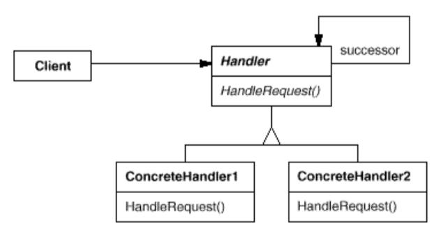 Chain of Responsibility Pattern Structure
The Client sends a request to the Handler, which is essentially an interface HandleRequest() to handle requests. ConcreteHandler objects inherit and implement the same interface to receive the request. They pass the request to the successor link, only processing the requests they are responsible for before the pass.
Implementation Example: Chain of Responsibility Pattern
Command
Encapsulate a request as an object, thereby letting you parameterize clients with different requests, queue or log requests, and support undoable operations.
The Command pattern encapsulates the request, and it’s related data into a standalone object. The request “object” can then be passed around as arguments to functions, queued for execution and “support undoable operations”.
Undoable operations here imply reversal of operations executed on the object. This is possible because Command’s execute method supports storing states, thereby reversing the effects of the operations executed in the Command itself.
The encapsulation of the request causes decoupling of the object that invokes the operation from the one which is going to actually process it.
The pattern is also known as Action and Transaction.
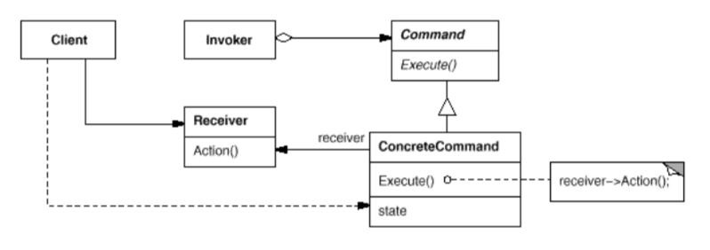 Command Pattern Structure
The Client accesses the Receiver indirectly by creating ConcreteCommand, which implements Command and inherits it’s Execute() interface. This object is stored by Invoker, which is responsible for actually executing the request by calling the Execute() method. When commands are undoable, ConcreteCommand stores state for undoing the command prior to invoking Execute().
Implementation Example: Command Pattern
Interpreter
Given a language, define a representation for its grammar along with an interpreter that uses the representation to interpret sentences in the language.
The Interpreter pattern allows the client to evaluate an expression in a particular language. A language’s grammar is made of several sets of rules on how to represent and understand the statements in that particular language. It is this representation itself which forms the context in which an Interpreter operates. Therefore by this context itself, an interpreter is able to interpret the statements of a language.
Each grammar rule is represented by a class.
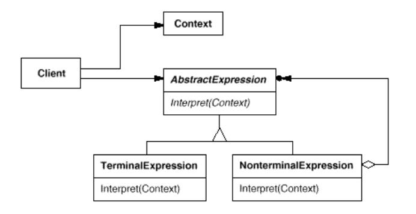 Interpreter Pattern Structure
The Context contains the representational information which is available to the Interpreter, and is used to store and access the states of an Interpreter during the interpretation process. The Client invokes the interpretation operation by calling the Interpret(Context) method of the AbstractExpression. This AbstractExpression is essentially an abstract syntax tree made up of TerminalExpression and NonterminalExpression.
To understand how an abstract syntax tree is constructed, let’s take a set of sentences as an example. They describe a subject, an object and a verb.
- Mark kicked a ball.
- The dog ran to the pole.
- I ate a biscuit.
When segregated, the structure of these sentences can be laid out as follows:
- Subject: Mark, Dog, I
- Object: Ball, Pole, Biscuit
- Verb: Kick, Run, Eat
These sentences will be structured as follows:
- TerminalExpression
- Symbols that are actual components of the sentences using a language’s grammar.
- Taking the language to be English in the example sentences, “Mark”, “Pole”, “Eat” and the other concretely defined words are the Terminal Symbols since they actively participate in construction of a statement in the language.
- NonterminalExpression
- Symbols that help with the construction of a statement in a language but don’t actively participate in it’s construction.
- Also known as AlternationExpression, RepetitionExpression and SequenceExpressions.
- Taking the language to be English in the example sentences, “Subject”, “Object" and “Verb” are Non-Terminal Symbols.
Implementation Example: Interpreter Pattern
Iterator
Provide a way to access the elements of an aggregate object sequentially without exposing its underlying representation.
The Iterator pattern, also known as Cursor, is aimed at separating a list object from the responsibilities of access and traversal of the list. This ensures that the list object will not get overburdened with implementation of different mechanisms required for traversal. The implementation of the pattern is as follows:
- An Iterator class defines an interface to give the client access to the elements of a list without exposing it’s internal structure.
- An Iterator object is instantiated to implement a traversal mechanism and keep track of the elements traversed.
Iterators have a unicast design structure, that is, once a value is iterated over and consumed, it can never be seen again by any other consumer. This is facilitated by the fact that it tracks the elements traversed. For example, a cursor is used to fetch all rows of a table from MySQL database. Once a row is fetched, it cannot be retrieved again from this cursor. A new cursor has to be instantiated and traversed to reach that row and fetch it.
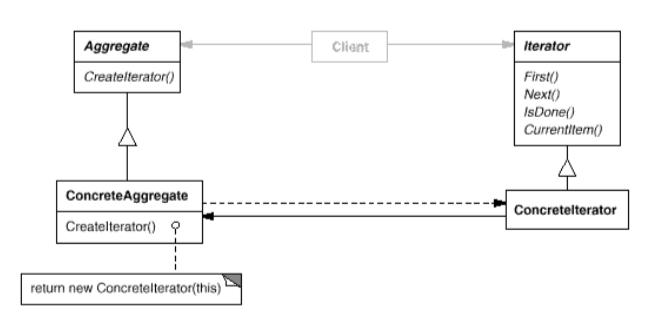 Iterator Pattern Structure
An Aggregate structure, an abstract class for a particular data structure like a list, defines an interface to create an object of type Iterator. This Iterator defines various traversal interfaces like First() and Next() to return the first item and the next item in the traversal progress of Aggregate. ConcreteIterator implements the Iterator interface, and ConcreteAggregate implements this Iterator creation interface to return an instance of ConcreteIterator.
Polymorphic Iterators support iteration of list objects regardless of the data structure. A common iteration interface is defined, from which concrete iterator subclasses can be created for different implementations. This decouples the iteration mechanism from the actual concrete aggregate data structure.
Implementation Example: Iterator Pattern
Mediator
Define an object that encapsulates how a set of objects interact. Mediator promotes loose coupling by keeping objects from referring to each other explicitly, and it lets you vary their interaction independently.
The number of components grows with the increase in functionality of an application. Too many direct interactions between components creates unstructured and complex interdependencies. The reduces the reusability of a component since it would require communication with other components to accomplish a task. Mediator pattern brings a central point of control through which different components can interact with each other. The components communicating through the Mediator are called Colleagues.
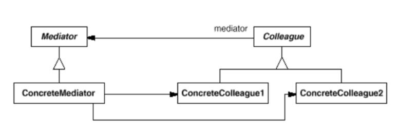 Mediator Pattern Structure
The Mediator defines an interface for communication between objects of type Colleague. ConcreteMediator implements this interface for coordination between multiple ConcreteColleague instances. For example, an Air Traffic Control tower can be considered to be a mediator between different flights. It coordinates the flying schedule and routes, being the single point of contact for all flights so that the pilots themselves do not have to communicate amongst themselves.
Implementation Example: Mediator Pattern
Memento
Without violating encapsulation, capture and externalize an object’s internal state so that the object can be restored to this state later.
Encapsulation enforces all object related data (including it’s state) to be stored within the object itself. This puts concepts like checkpoints and mechanisms like data restoration in violation of the principle since making any of the internal data of an object accessible to other objects, or storing it externally is discouraged.
The Memento pattern, also known as Token, stores the internal state of an object which can then be used to restore the object to a previous (stored) state at a later time. The encapsulation upheld by ensuring that a memento object is bound to the object whose data it is storing.
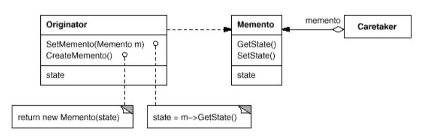 Memento Pattern Structure
The Caretaker is responsible for instantiating a Memento, and solely manages the passing of the right Memento object to the right Originator. It never accesses the data inside the Memento. The Originator requests a Memento through the CreateMemento() method, in which it stores its internal state. The Memento stores the data as per the request from the SetMemento(Memento) method.
Implementation Example: Memento Pattern
Observer
Define a one-to-many dependency between objects so that when one object changes state, all its dependents are notified and updated automatically.
A system where multiple components are cooperating to achieve a functionality may face problems in maintaining consistency between these components. One component changing it’s state might directly affect the other components working with it, and it would throw the system out of sync if there is no mechanism for the other components to be updated of such a change.
The Observer pattern, ensures consistency by establishing the relationships between multiple components in a subject and observer structure. A subject may have any number of Dependents (observers), which get notified if the subject’s state changes. This allows the observers to synchronize with the subject’s state. This interaction is known as Publish-Subscribe.
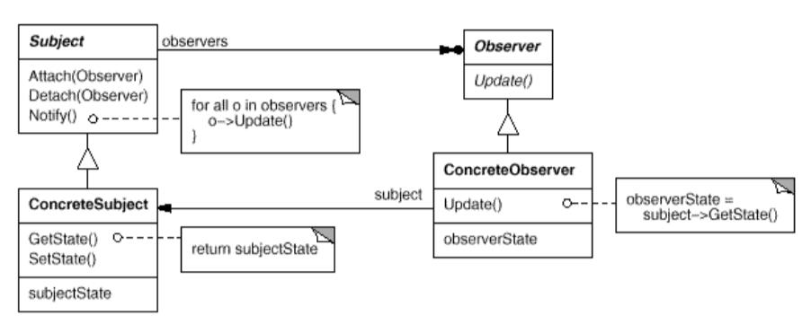 Observer Pattern Structure
The Subject provides an interface to attach and detach objects of type Observer through Atttach(Observer) and Detach(Observer) methods. ConcreteSubject implements Subject class. It stores the state which is of interest to Observer objects, and sends them a notification in the even of a state change. ConcreteObserver the Update() method of Observer class. Each ConcreteObserver maintains a reference to a ConcreteSubjet object and updates its state to maintain consistency with ConcreteSubject.
Implementation Example: Observer Pattern
State
Allow an object to alter its behavior when its internal state changes. The object will appear to change its class.
The State pattern maintains the state for objects whose behavior depends on that state at run-time. This state is represented by numerated constants that are used as conditionals to decide the behavior. The State pattern puts each branch of the conditional in a separate class, allowing every state of the object to be its own entity.
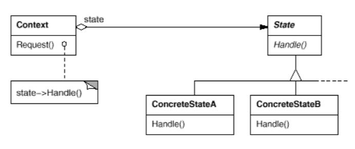 State Pattern Structure
The Context defines the interface that a client can interact with. The State defines the interface to encapsulate the behavior pertaining to different states of the Context. Each ConcreteState subclass implements the behavior of the Context for a particular state.
For example, a simple socket will either be in ACCEPT state wherein it will accept connections or it will be in a REJECT state where it will reject all connections.
A direct effect of implementing the State pattern is that all state-specific behavior is packaged into one object, localizing the state behavior. This makes it easier to add new states and their associated functionality. However, localizing a state’s behavior imposes creation of a new subclass for that particular state. This increases the number of classes and makes the codebase less compact.
Implementation Example: State Pattern
Strategy
Define a family of algorithms, encapsulate each one, and make them interchangeable. Strategy lets the algorithm vary independently from clients that use it.
The Strategy pattern, also known as Policy, divides a single class with multiple behaviors into multiple related classes that only differ in their behavior, called strategies. A single parent class, called Context, maintains a reference to the strategies, and delegates the work to a strategy object. The client is responsible for declaring the strategy to be used, while the context simply implements a generic interface for triggering the requested strategy. This makes the context independent of strategies, allowing addition of new ones or modification of old ones without the requirement of change in implementation of the context or other strategies. However, this requires the client to be aware of different strategies.
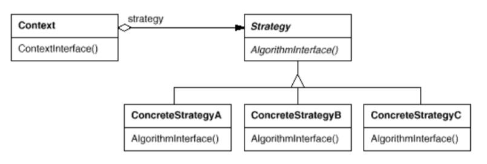 Strategy Pattern Structure
The Context maintains a reference to an object of type Strategy, and implements the ContextInterface() interface to communicate with this reference. The Strategy object declares an interface AlgorithmInterface() to delegate the task to a ConcreteStrategy object which would implement a particular algorithm. Thus, the Strategy and the Context interact to implement the chose algorithm.
Implementation Example: Strategy Pattern
Template
Define the skeleton of an algorithm in an operation, deferring some steps to subclasses. Template Method lets subclasses redefine certain steps of an algorithm without changing the algorithm’s structure.
The Template pattern defines an algorithm’s constant parts, while keeping the variable parts abstract, allowing the subclasses to override this abstract (variable) part with concrete behavior. This prevents code duplication among classes with some common behavior. The effectiveness is inversely proportional to the number of methods required to be overridden by subclasses; the more operations that need overriding, the lesser is the generic functionality a template can offer.
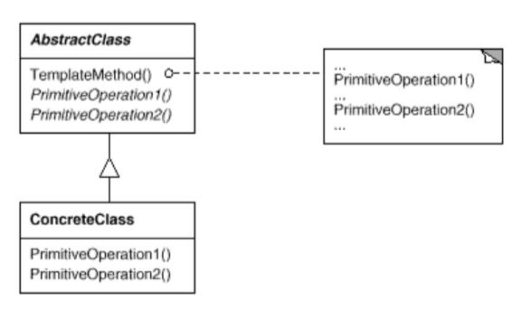 Template Pattern Structure
The AbstractClass defines a specific behavior with abstract methods like PrimitiveOperation1() which can be overridden by objects of type ConcreteClass to implement these operations in it’s own way.
Implementation Example: Template Pattern
Visitor
Represent an operation to be performed on the elements of an object structure. Visitor lets you define a new operation without changing the classes of the elements on which it operates.
The Visitor pattern facilitates creation of a single object consisting of many classes, where these classes have different interfaces whose output is solely dependent on their concrete class. The visitor (single object) can be shared amongst many classes as it would keep all related operations together, and process output based on the concrete class of the object calling it. This introduces a concept called Double Dispatch, that delegates the responsibility of choosing the right method to the object itself rather than the client.
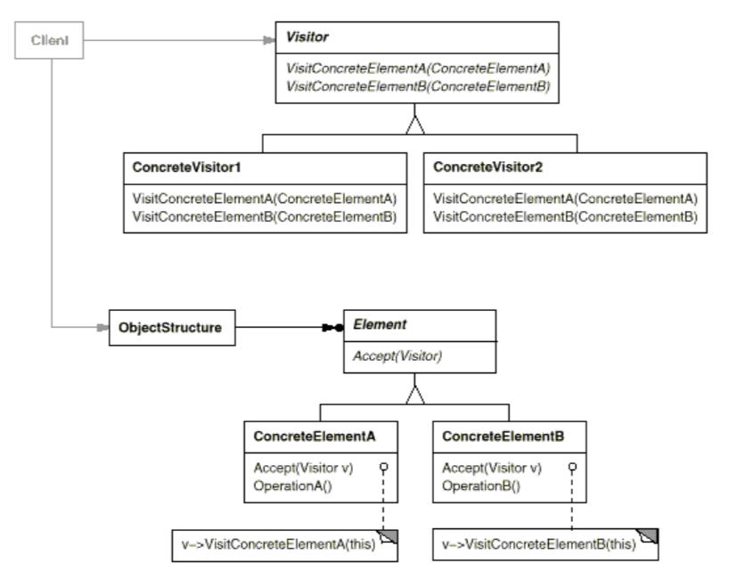 Visitor Pattern Structure
The ObjectStructure provides a high-level interface to allow access to its objects of type Element. The Element declares a method Accept(Visitor) to reference the Visitor. Each ConcreteElement implements the inherited Accept(Visitor) method. The Visitor defines methods for each ConcreteElement. The choice of the method executed by the Visitor is dependent on the concrete class of the object requesting it, known through the signature of the method in the request. The ConcreteVisitor implements the operations declared by the Visitor, and provides the context for an algorithm.
Implementation Example: Visitor Pattern
Citation: Gang of Four Design Patterns
design-patternsgangs-of-fourbehavioral-patternschain-of-responsibilitycommandinterpreteriteratormediatormementoobserverstatestrategytemplatevisitor
2441 Words
2021-08-16 05:30 +0530